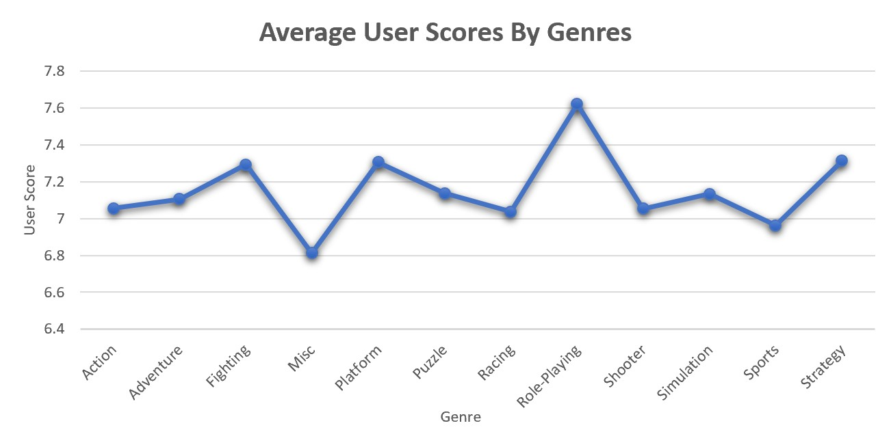
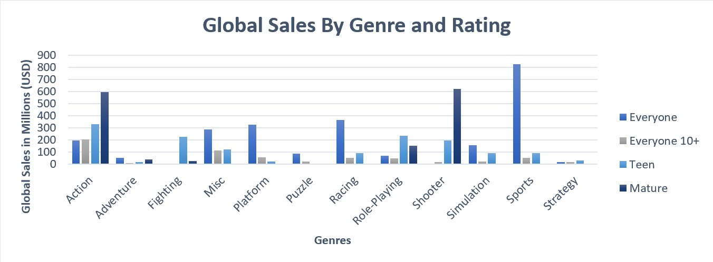

Sales & Scores
Excel Data Analysis
Objectives & Questions that will drive the analysis:
• Which consoles had the highest global sales for the PlayStation and Xbox consoles over the years?
• What is the highest-rated genre by users?
• Which games sold the most globally when considering both genre and rating?
Cleaning & Preparation:
The raw data included information about crime rates and drop-out rates ranging from 1990 to 2017 across North America, Japan, and Europe. Since this did not pertain to our analysis questions, they were removed. The untransformed data can be found in this LINK here.
The following actions were performed to prepare the data:
• Eliminated duplicate values and columns that did not correspond to the data
• Eliminated empty cells
• Corrected misspelled/inaccurate values
• Adjusted numerical values to better suit the analysis
Data Analysis:
To answer our target questions, analysis was done using Excel pivot tables, slicer filters, and visualizations.
• Q1: Which consoles had the highest global sales for the PlayStation and Xbox consoles over the years?
• Q2: What is the highest-rated genre by users?
• Q3: Which games sold the most globally when considering both genre and rating?
Visualization:
Finally, we created an easy-to-understand overview of our analysis via the dashboard below. On it, different filters can be selected to show the specific answers to our objective questions. Access to the dashboard can be found here by clicking this LINK here.
Conclusion:
Here we can see that after our analysis that was performed via Excel for our first question that the highest-grossing consoles for PlayStation and Xbox were the PS2 and the Xbox 360, with both reaching over 150 million in USD respectively. Next, the highest-rated genre determined by user scores was by far the genre “Role-Playing”. Finally, we were able to determine that sports genre games rated “E” for everyone sold the most globally with a large sum of over 800 million USD.
With these results, the next course of action for the gaming industry would be to focus on as to why the PS2 and Xbox 360 were so popular by sending out consumer surveys to those that purchased them. From the information attained from user feedback, future consoles can be produced with those opinions in mind. In addition to this, going with how well “Role-Playing” and sports games rated “E” for everyone were highly rated by users it would be a wise move to pursue producing more of these types of games so that similar global profits can be achieved.